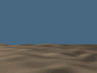

|
During the day, Amenemopet watched the sun. He worked out what time of day it was by looking at the sun's position in the sky. Ordinary people worked out the time of day in the same way, but they had less experience and training than Amenemopet.

Next...
|